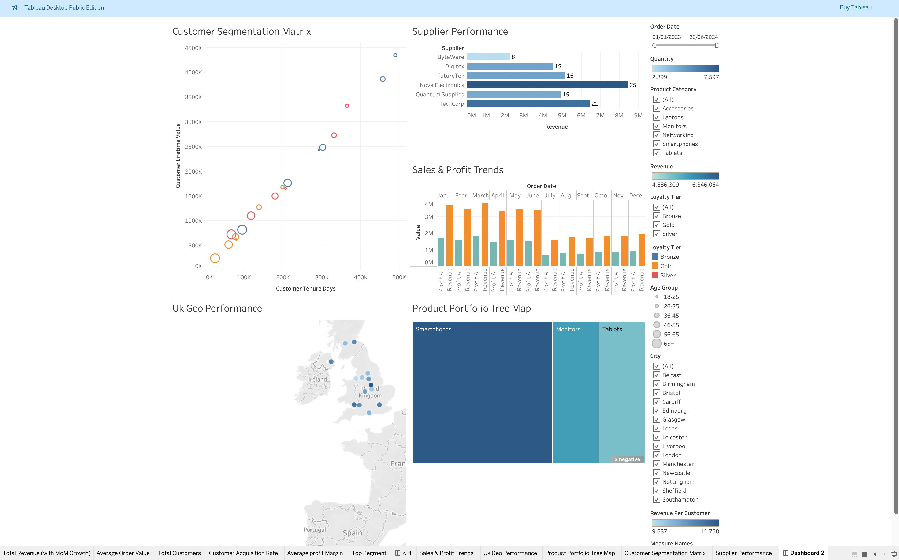

Been assigned to the Data & Insight team and granted access to a comprehensive dataset that encompasses sales, product, and customer information for visual exploration.
My primary objectives Is to analyze patterns, performance metrics, and present findings through charts and summary tables.
The report will focus on revenue generation across all regions and product categories and evaluate delivery performance.
This analysis aims to identify regions facing significant delivery challenges and propose actionable enhancements to improve overall business performance.
Additionally, a deeper understanding of customer behavior will enable us to access loyalty tiers value over time,
track purchase volume, and evaluate the effects of discounts on sales.

As part of the Business Intelligence team, analyzing user behavior data for the Monthly Business Review (MBR).
I received a customer sign-up dataset for a data quality audit to identify inaccuracies, understand sign-up trends,
and assess marketing opt-in behavior and demographics. This analysis will help optimize our campaigns and engagement workflows.
The dataset includes customer information from the sign-up process,
with each row representing an individual customer and columns offering insights into trends, demographics, and marketing effectiveness.

This analysis aims to offer valuable insights into churn patterns, predict churn probability, and identify behaviors that impact revenue.
By doing so, I aim to comprehensively assess who is churning, the reasons behind their departure, and strategies to mitigates this churn.
Ultimately, this will enable StreamWorks Media to implement targeted retention campaigns and enhance its competitive positioning in the market.

I have established a personal home/work lab utilising VirtualBox, integrating a variety of essential tools including Kali Linux, Ubuntu, Parrot,
and Oracle Virtual Machine. Additionally, I have incorporated a Windows Server and implemented firewalls, specifically pfSense by Netgate,
to enhance our security infrastructure. For operational purposes, I have a Windows 8 PC dedicated to sales, auditing, and human resources tasks.
The network has been organised effectively, with all Windows servers situated on an operations subnet and the other machines allocated to an IT subnet,
ensuring streamlined functionality and enhanced performance.

The primary dashboard objective of this analysis is to uncover actionable insights across various products,
regions, and customer segments by examining historical performance,
recognizing emerging trends, and enabling informed decision-making for TechHub Retail’s 2025 initiatives.
This will involve the construction of predictive insights and the formulation of actionable recommendations to support executive-level decisions.
This structured approach is expected to enhance strategic planning and operational efficiency,
ultimately driving growth for TechHub Retail.